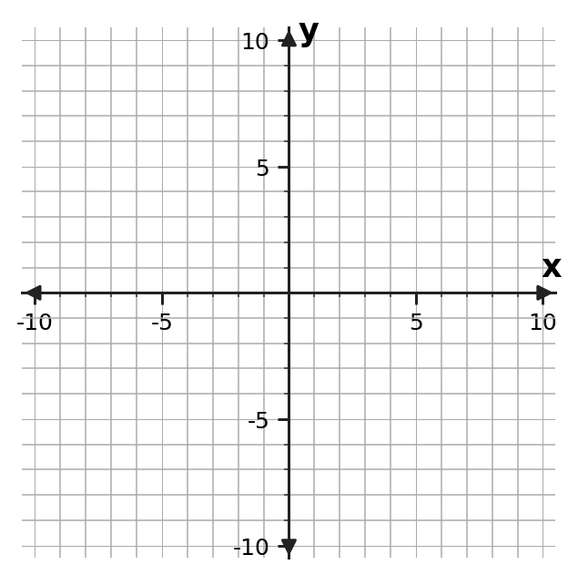
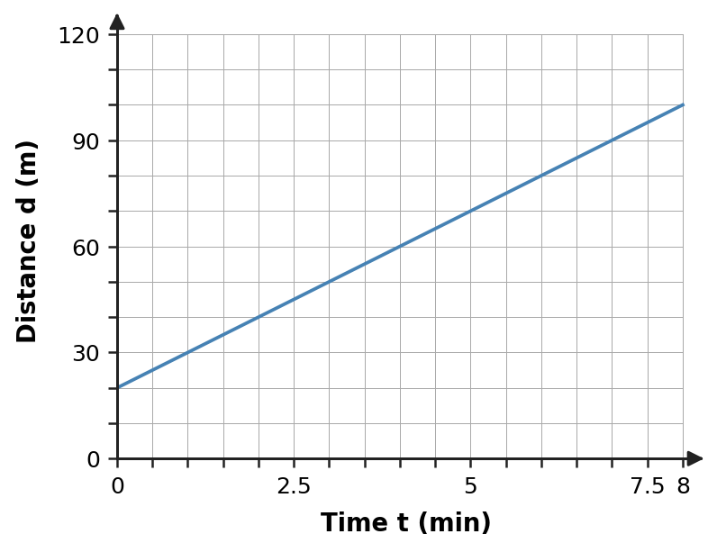
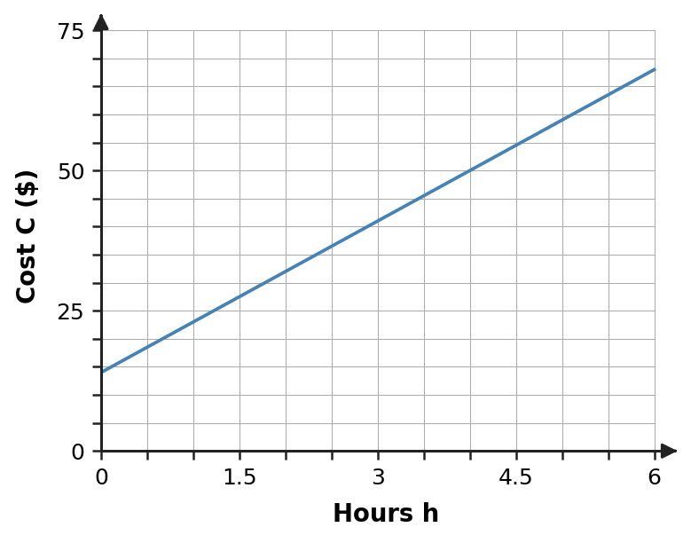
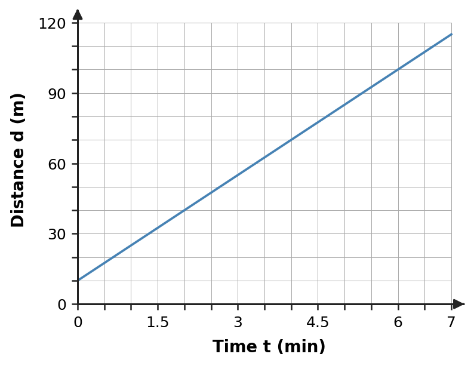
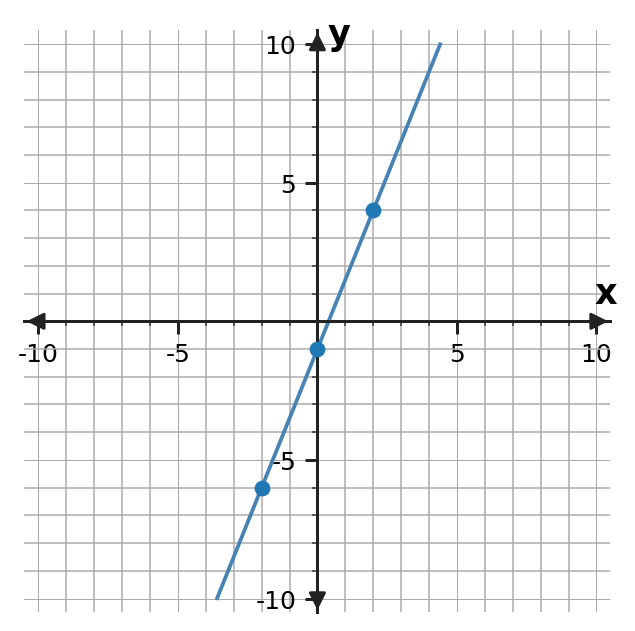
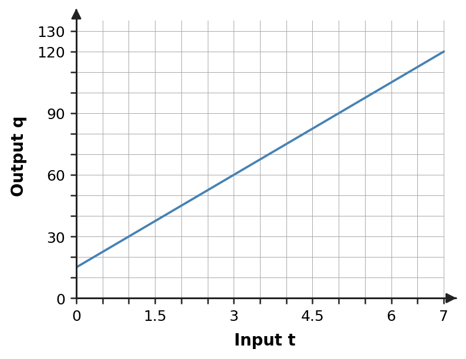
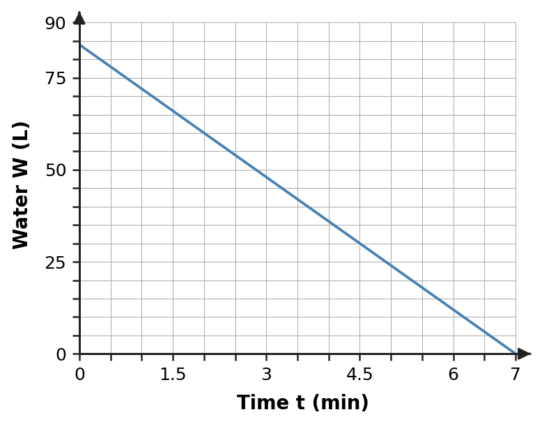
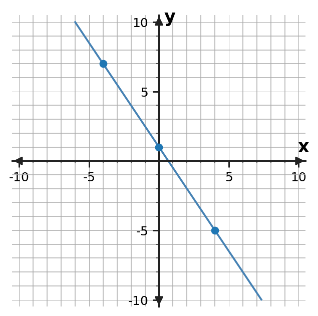
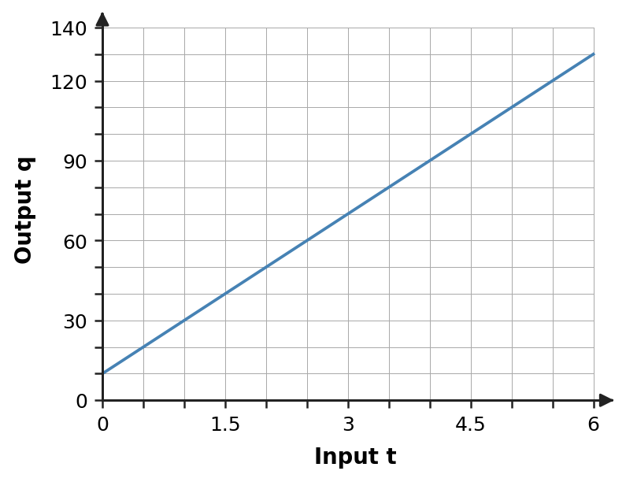
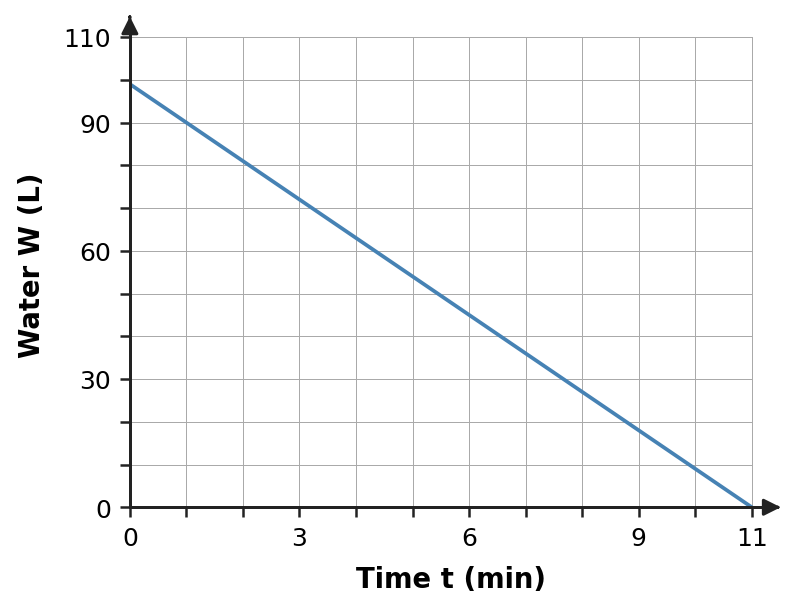

Plot and label $K(5,-7)$ on the coordinate plane.
Choose a section.
| 1 Plot and label $K(5,-7)$ on the coordinate plane.  | 2 The graph shows distance $d$ (meters) after time $t$ (minutes). Use the scale to read $d$ when $t=7$.  |
| 3 For $M(-6,4)$, which axis tells you the $-6$ move and which tells you the $4$ move? Then plot and label $M$. | 4 The graph models total bike-rental cost $C$ after $h$ hours. What does the y-intercept mean in this situation? Include the amount and what it represents.  |
Plot and label $K(5,-7)$ on the coordinate plane.
The graph shows distance $d$ (meters) after time $t$ (minutes). Use the scale to read $d$ when $t=7$.
For $M(-6,4)$, which axis tells you the $-6$ move and which tells you the $4$ move? Then plot and label $M$.
The graph models total bike-rental cost $C$ after $h$ hours. What does the y-intercept mean in this situation? Include the amount and what it represents.
| 1 Evaluate $2x^2-3(x+1)$ when $x=-3$. Show the substituted expression before simplifying. | 2 For $5a+3b$ with $a=-4$ and $b=-6$, predict whether the result should be positive or negative. Then evaluate and use the sign to check whether your result is reasonable. |
| 3 Plot and label $N(-8,3)$ on the coordinate plane. | 4 The graph shows distance $d$ (meters) after time $t$ (minutes). Use the scale to read $d$ when $t=6$.  |
Evaluate $2x^2-3(x+1)$ when $x=-3$. Show the substituted expression before simplifying.
For $5a+3b$ with $a=-4$ and $b=-6$, predict whether the result should be positive or negative. Then evaluate and use the sign to check whether your result is reasonable.
Plot and label $N(-8,3)$ on the coordinate plane.
The graph shows distance $d$ (meters) after time $t$ (minutes). Use the scale to read $d$ when $t=6$.
| 1 Find the slope of the line using two points from the graph. Then use the table to verify the same rate.
 | 2 A cooler’s temperature $T$ (°F) after $m$ minutes is $T=-3m+54$. What is the rate of change, and what does the rate mean in this situation? | ||||||||
| 3 Evaluate $3x^2-2(x+4)$ when $x=-2$. Show the substituted expression before simplifying. | 4 For $4p-5q$ with $p=-3$ and $q=-2$, predict whether the result should be positive or negative. Then evaluate and use the sign to check whether your result is reasonable. |
Find the slope of the line using two points from the graph. Then use the table to verify the same rate.
| x | y |
|---|---|
| -2 | -6 |
| 0 | -1 |
| 2 | 4 |
A cooler’s temperature $T$ (°F) after $m$ minutes is $T=-3m+54$. What is the rate of change, and what does the rate mean in this situation?
Evaluate $3x^2-2(x+4)$ when $x=-2$. Show the substituted expression before simplifying.
For $4p-5q$ with $p=-3$ and $q=-2$, predict whether the result should be positive or negative. Then evaluate and use the sign to check whether your result is reasonable.
| 1 Use the graph scale to read the output $q$ when the input is $t=5$.  | 2 The graph shows water $W$ (liters) remaining in a tank after $t$ minutes. Identify the y-intercept as an ordered pair and explain what it means in the situation.  | ||||||||
| 3 Find the slope of the line using two points from the graph. Then use the table to verify the same rate.
 | 4 A cooler’s temperature $T$ (°F) after $m$ minutes is $T=-4m+62$. What is the rate of change, and what does the rate mean in this situation? |
Use the graph scale to read the output $q$ when the input is $t=5$.
The graph shows water $W$ (liters) remaining in a tank after $t$ minutes. Identify the y-intercept as an ordered pair and explain what it means in the situation.
Find the slope of the line using two points from the graph. Then use the table to verify the same rate.
| x | y |
|---|---|
| -4 | 7 |
| 0 | 1 |
| 4 | -5 |
A cooler’s temperature $T$ (°F) after $m$ minutes is $T=-4m+62$. What is the rate of change, and what does the rate mean in this situation?
| 1 The rule is $y=-4x+9$. Find the output when the input is $x=-3$, then record the input and output as an ordered pair. | 2 The rule is $y=4x+3$. Find the missing input that gives output 31. Then extend the table by finding the output for input $-2$.
| ||||||
| 3 Use the graph scale to read the output $q$ when the input is $t=5$.  | 4 The graph shows water $W$ (liters) remaining in a tank after $t$ minutes. Identify the y-intercept as an ordered pair and explain what it means in the situation.  |
The rule is $y=-4x+9$. Find the output when the input is $x=-3$, then record the input and output as an ordered pair.
The rule is $y=4x+3$. Find the missing input that gives output 31. Then extend the table by finding the output for input $-2$.
| x | y |
|---|---|
| ? | 31 |
| -2 | ? |
Use the graph scale to read the output $q$ when the input is $t=5$.
The graph shows water $W$ (liters) remaining in a tank after $t$ minutes. Identify the y-intercept as an ordered pair and explain what it means in the situation.